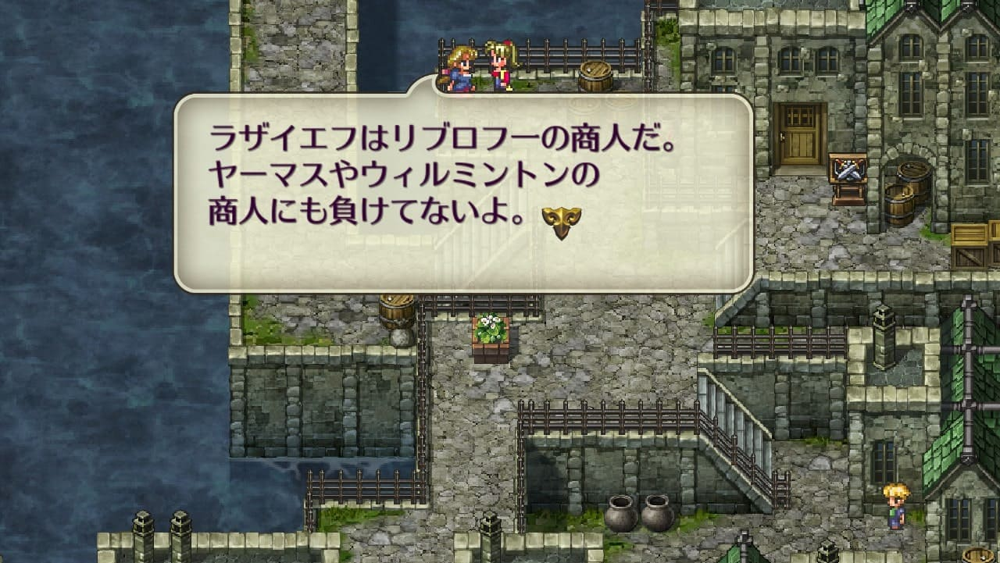
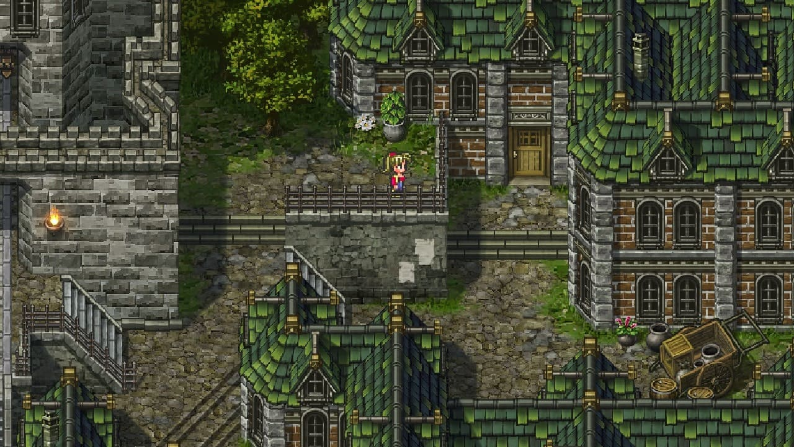
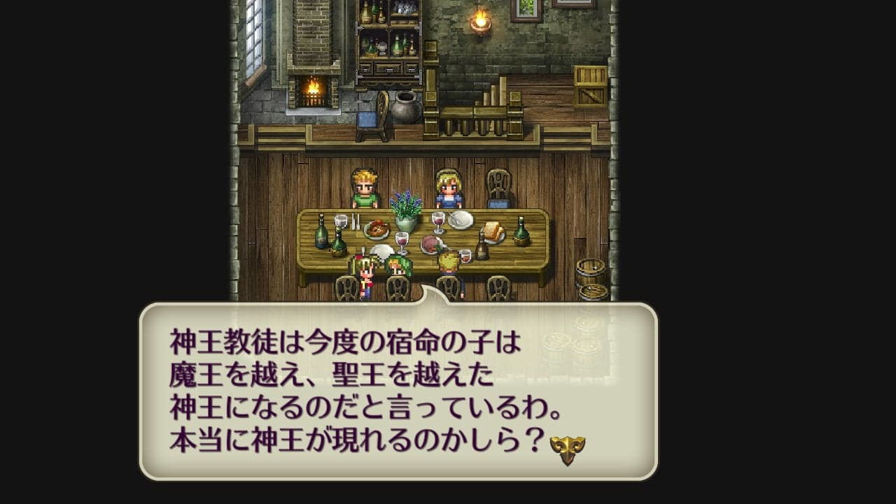
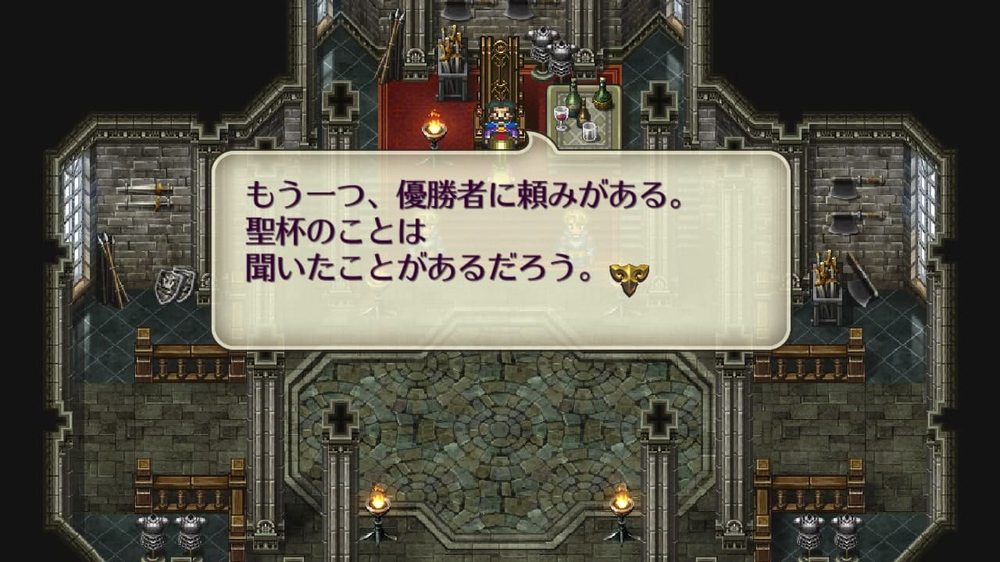
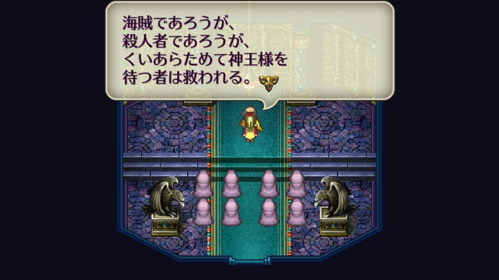
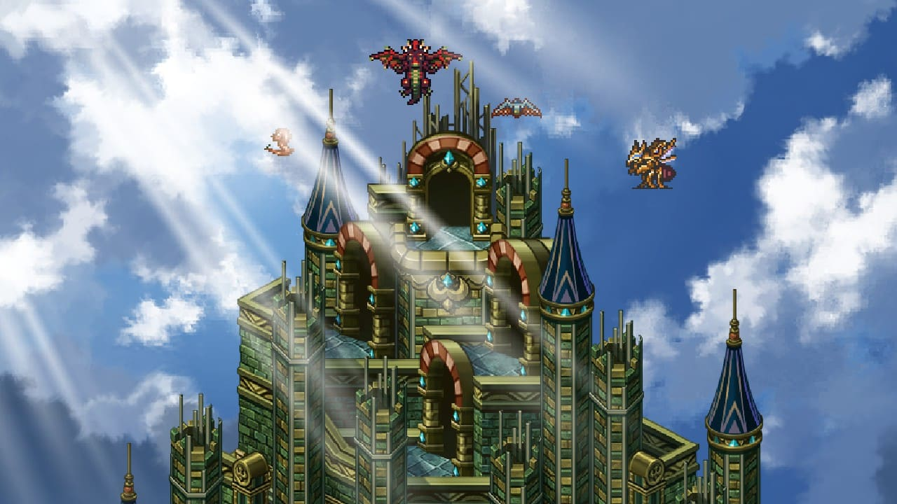

フルブライト
フルブライト
ゲーム中に登場するフルブライトはフルブライト23世。聖王三傑のフルブライトは12世なので、その子孫にあたる人物。
ロマサガ3の世界で商家というと以下4つぐらい。
- ウィルミントンのフルブライト
- ヤーマスのドフォーレ
- ピドナのクラウディウス
- リブロフのラザイエフ

※クラウディウスは貴族のイメージだが、以下フルブライトの発言もあるので商家に入れてみました。
トレード1期。クラウディウス家が没落したことによる事態の収集をしたいが、伝統あるフルブライト家は表立った行動がしづらいので主人公たちに依頼する。
トレード2期。聖王が禁止した取引を行っているドフォーレ商会を叩いてほしいと依頼される。

ドフォーレ商会は金儲けのために悪いことをやっている。
ピドナ
新市街


魔王殿
ツヴァイク
ツヴァイク公は聖杯がヴァンパイアの手にあることが気に入っていない。
ツヴァイクトーナメントは聖杯をレオニードから奪取できるような猛者を探していた？

ロアーヌ
小さな村
神王の塔



雪の町
東方

参考